Mission
To ensure that every individual in our community receives continuous, compassionate, and coordinated care — regardless of geography, income, or mobility constraints.
LifeBridge® SaaS brings caregivers together as a unified team and equips schedulers with the tools to manage flexible, personalized visits across independent living communities with ease
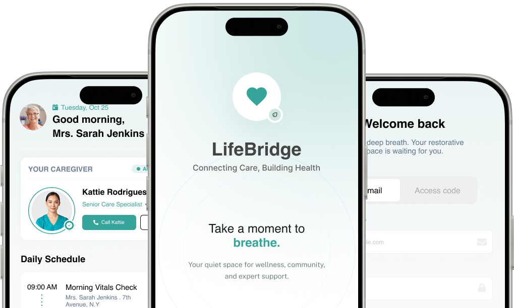
LifeBridge Community Care Management is a purpose-built digital platform designed to unify the fragmented ecosystem of community healthcare. Serving urban and semi-urban populations with limited access to traditional hospital-based care, LifeBridge bridges the gap between administrative oversight, frontline caregivers, and the patients they serve.
This case study examines three core stakeholder groups — Administrators, Caregivers, and Patients — documenting the operational challenges each group faced before LifeBridge's implementation, the solutions deployed, and the measurable outcomes achieved within the first 18 months of full-scale operation.
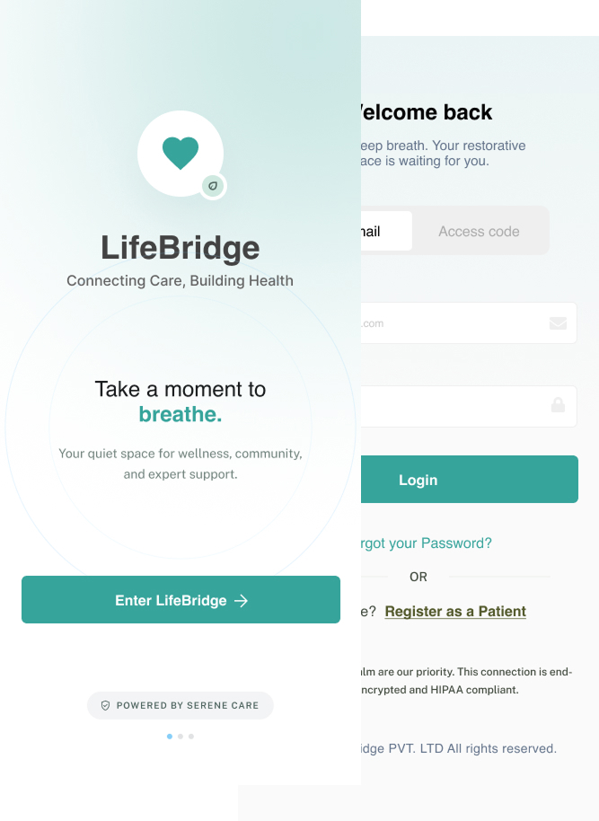
| Admin Efficiency | Caregiver Productivity | Patient Outcomes |
|---|---|---|
|
42%
Reduction in admin overhead
|
35%
More patient visits per day
|
61%
Patient satisfaction scores
|
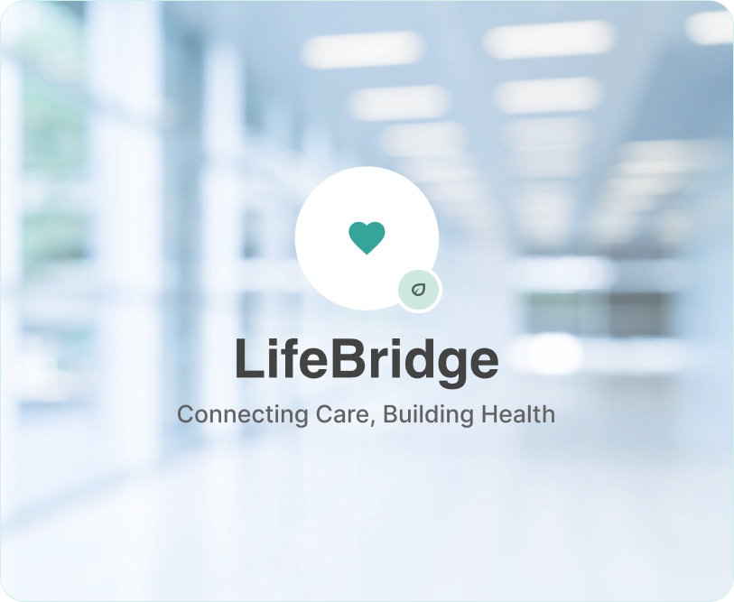
Founded in 2019 in response to a critical shortage of coordinated care services across underserved communities, LifeBridge set out to address one of the most pressing challenges in modern healthcare: the disconnect between care planning, care delivery, and patient engagement.
What started as a small pilot program serving 200 patients across 3 neighbourhoods has grown into a fully scaled operation managing over 14,000 active patients, 380 caregivers, and 22 administrative staff — all coordinated through the LifeBridge platform.
To ensure that every individual in our community receives continuous, compassionate, and coordinated care — regardless of geography, income, or mobility constraints.
A world where no patient falls through the cracks of the healthcare system, and every caregiver has the tools and support needed to deliver their best work
22 administrators manage scheduling, compliance, reporting, resource allocation, and stakeholder communications
380 caregivers including nurses, home health aides, social workers, and therapy specialists
14,000+ active patients spanning elderly care, chronic disease management, and post-hospital recovery
Prior to implementing LifeBridge, the administrative layer at Community Care Management operated on a patchwork of spreadsheets, email chains, and a legacy case management system that hadn't been updated in over a decade.
LifeBridge's AI-assisted scheduling engine automatically matches caregiver availability, skill sets, and patient acuity levels. Administrators set parameters; the system generates optimal daily rosters, flags conflicts, and auto-reroutes assignments when emergencies arise.
All documentation — care plans, medication logs, incident reports, and consent forms — are digitized and stored with version control. The compliance module runs automated checks against regulatory frameworks, generating pre-audit readiness reports in real time.
Administrators access live dashboards showing caseload distribution, caregiver performance metrics, patient visit completion rates, and budget utilization. Custom report generation reduced reporting time from 6 hours to under 30 minutes.
A dedicated onboarding module digitizes credential verification, background checks, training completion tracking, and policy acknowledgment. New caregiver activation time dropped from 21 days to 4 days.
My primary goal was to create a simple navigation which allow user to easily navigate through their product seamlessly and allow smooth checkout.
After identifying key user pain points related to navigation, browsing, and the checkout process, I proceeded to sketch paper wireframes for each screen of the app. During this phase, my primary goal was to address these issues through thoughtful layout and interaction design.
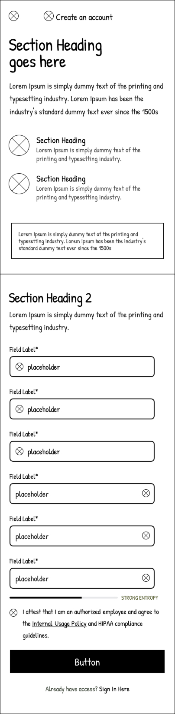
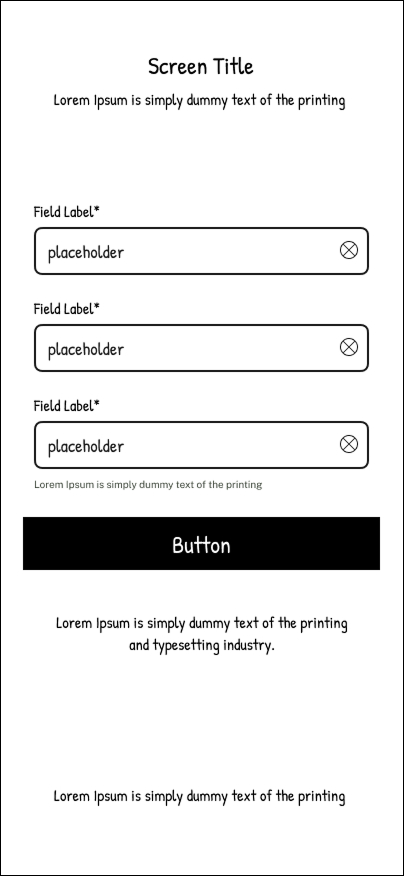
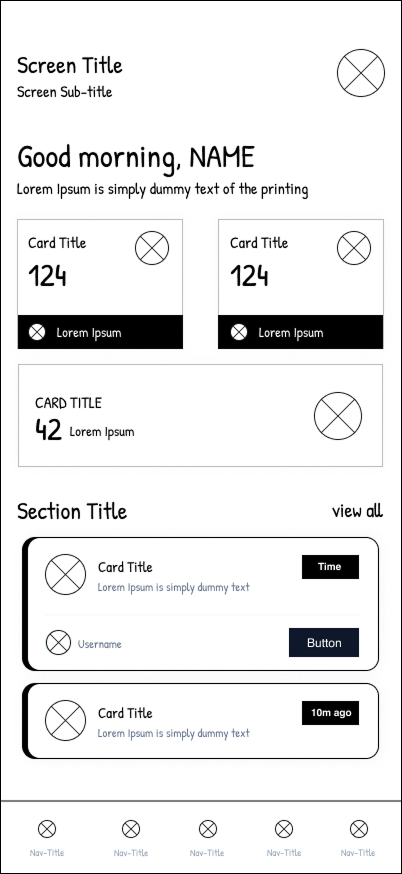
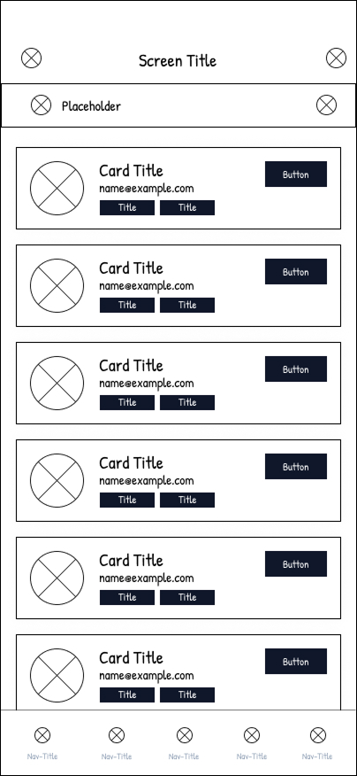
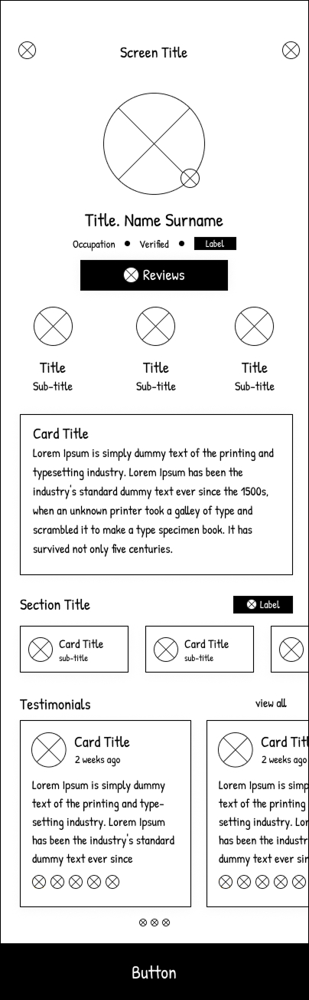
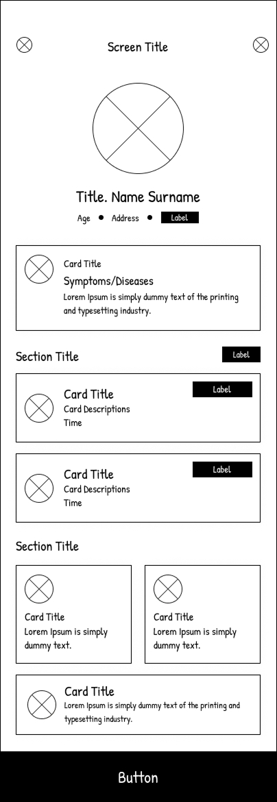
After identifying key user pain points related to navigation, browsing, and the checkout process, I proceeded to sketch paper wireframes for each screen of the app. During this phase, my primary goal was to address these issues through thoughtful layout and interaction design.
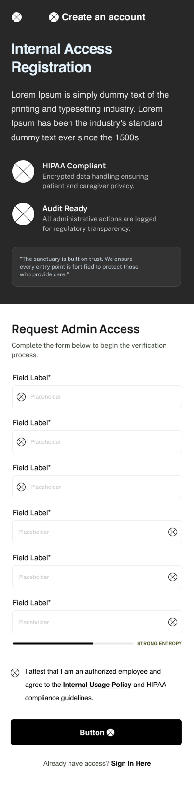
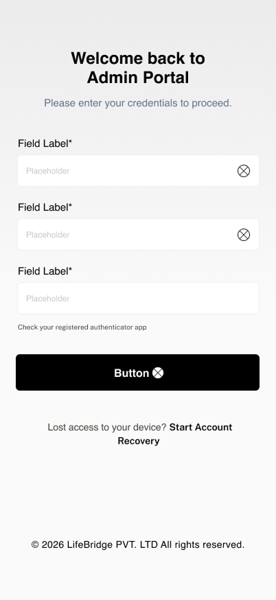
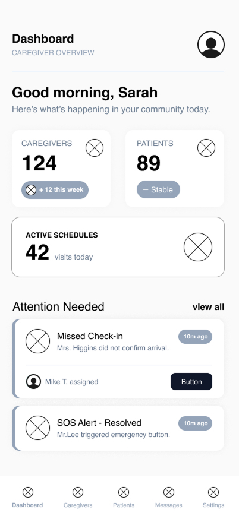
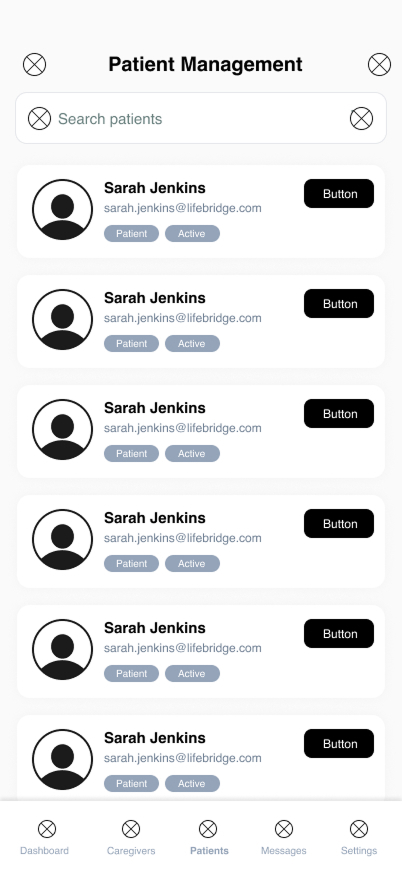
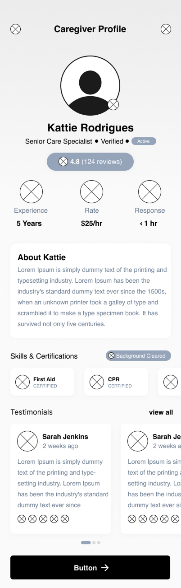
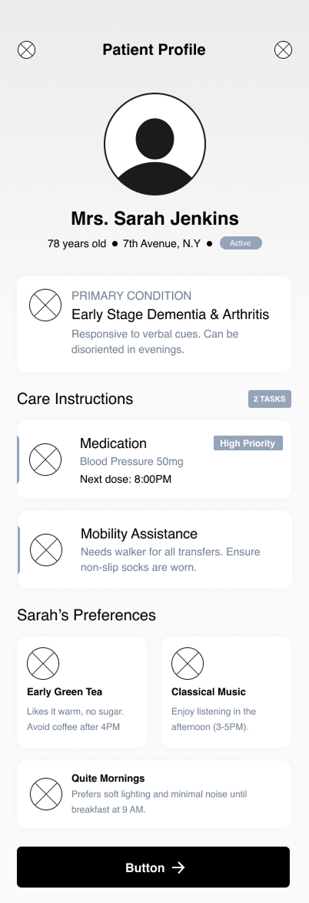
After identifying key user pain points related to navigation, browsing, and the checkout process, I proceeded to sketch paper wireframes for each screen of the app. During this phase, my primary goal was to address these issues through thoughtful layout and interaction design.
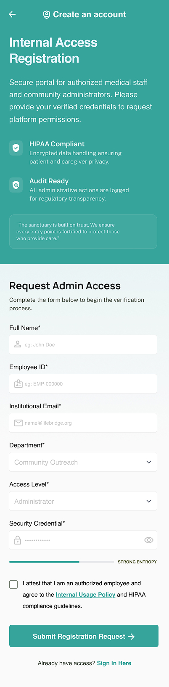
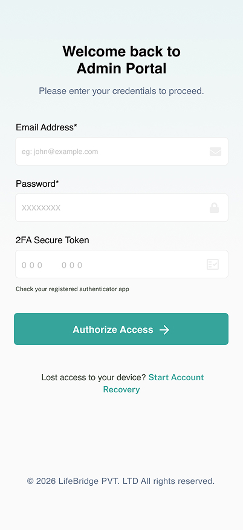
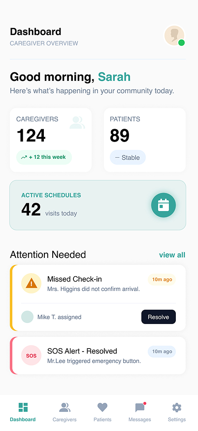
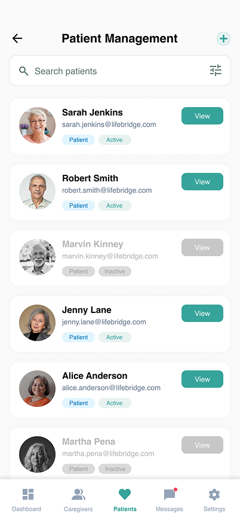
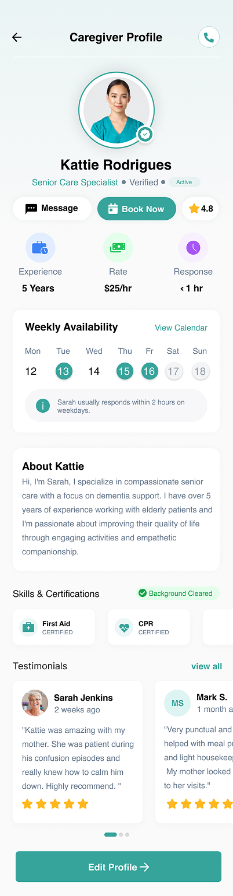
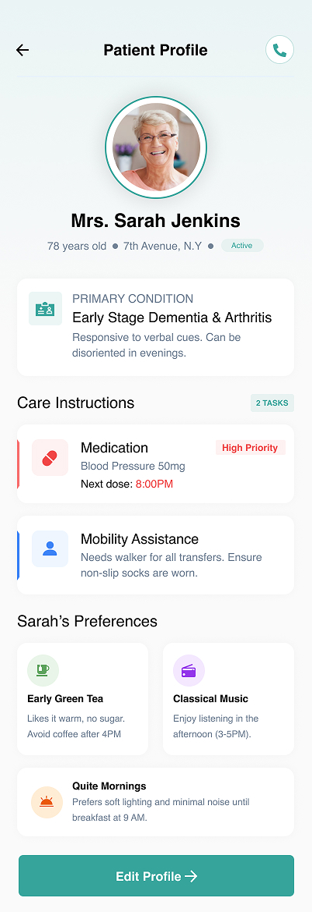